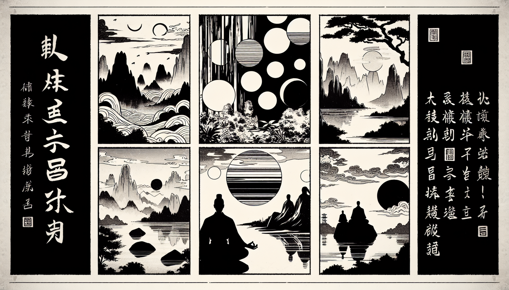

七十五巻 巻一覧
正法眼藏第42 説心説性
本紹介ページの導入・語彙・深掘り・クイズは tools/regen_volume_intro_from_corpus.py が OpenAI API で生成したものです（入力は当巻の原文からの短い抜粋のみ）。内容はモデル出力のため、重要箇所は必ず原文・教本と照合してください。
出典: https://shomonji.or.jp/zazen/doc/genzou.html
原文・現代語訳の全文は 全文ページを参照してください。
この巻の紹介（導入）
神山僧密禪師、與洞山悟本大師行次、悟本大師、指傍院曰、裏面有人説心説性。
説心説性は佛道の大本なり、これより佛佛祖祖を現成せしむるなり。
語彙の足場
- 説心説性：佛道の根本的な教えであり、心と性の本質を説くこと。
- 拈花瞬目：禅の教えにおける特別な瞬間を示す言葉で、心の本質を直感的に理解することを表す。
- 証契：悟りを得ること、または真理を理解することを指す。
- 佛性：すべての生き物が持つとされる仏の性質。
- 無佛性：仏性が存在しないとされる状態。
原文（要点の抜粋）
当巻の冒頭付近からの短い抜粋です。長い引用は載せていません。 全文は全文ページを参照してください。出典はリポジトリ内 doc/正法眼蔵.txt です。原文の参照元: https://shomonji.or.jp/zazen/doc/genzou.html
神山僧密禪師、與洞山悟本大師行次、悟本大師、指傍院曰（洞山悟本大師と行次に、悟本大師、傍院を指して曰く）、裏面有人説心説性（裏面に人有りて説心説性す）。
僧密師伯曰、是誰（是れ誰そ）。
悟本大師曰、被師伯一問、直得去死十分（師伯に一問せられて、直に去死十分なることを得たり）。
僧密師伯曰、説心説性底誰（説心説性底は誰そ）。
悟本大師曰、死中得活（死中に活を得たり）。
説心説性は佛道の大本なり、これより佛佛祖祖を現成せしむるなり。説心説性にあらざれば、轉妙法輪することなし、發心修行することなし。大地有情同時成道することなし、一切衆生無佛性することなし。拈花瞬目は説心説性なり、破顔微笑は説心説性なり、禮拜依位而立は説心説性なり、祖師入梁は説心説性なり、夜半傳衣は説心説性なり。拈拄杖これ説心説性なり、横拂子これ説心説性なり。
おほよそ佛佛祖祖のあらゆる功徳は、ことごとくこれ説心説性なり。平常の説心説性あり、牆壁瓦礫の説心説性あり。いはゆる心生種種法生の道理現成し、心滅種種法滅の道理現成する、しかしながら心の説なる時節なり、性の説なる時節なり。しかあるに、心を通ぜず、性に達せざる庸流、くらくして説心説性をしらず、談玄談妙をしらず、佛祖の道にあるべからざるといふ、あるべからざるとをしふ。説心説性を説心説性としらざるによりて、説心説性を説心説性とおもふなり。これことに大道の通塞を批判せざるによりてなり。
後來、徑山大慧禪師宗杲といふありていはく、いまのともがら、説心説性をこのみ、談玄談妙をこのむによりて、得道おそし。但まさに心性ふたつながらなげすてきたり、玄妙ともに忘じきたりて、二相不生のとき、證契するなり。
この道取、いまだ佛祖の縑緗をしらず、佛祖の列辟をきかざるなり。これによりて、心はひとへに慮知念覺なりとしりて、慮知念覺も心なることを學せざるによりて、かくのごとくいふ。性は澄湛寂靜なるとのみ妄計して、佛性法性の有無をしらず、如是性をゆめにもいまだみざるによりて、しかのごとく佛法を僻見せるなり。佛祖の道取する心は皮肉骨髓なり、佛祖の保任せる性は竹箆拄杖なり。佛祖の證契する玄は露柱燈籠なり、佛祖の擧拈する妙は知見解會なり。
佛祖の眞實に佛祖なるは、はじめよりこの心性を聽取し、説取し、行取し、證取するなり。この玄妙を保任取し、參學取するなり。かくのごとくなるを學佛祖の兒孫といふ。しかのごとくにあらざれば學道にあらず。このゆゑに得道の得道せず、不得道のとき不得道ならざるなり。得不の時節、ともに蹉過するなり。たとひなんぢがいふがごとく、心性ふたつながら忘ずといふは、心の説あらしむる分なり、百千萬億分の少分なり。玄妙ともになげすてきたるといふ、談玄の談ならしむる分なり。この關棙子を學せず、おろかに忘ずといはば、手をはなれんずるとおもひ、身にのがれぬるとしれり。いまだ小乘の局量を解脱せざるなり、いかでか大乘の奥玄におよばん、いかにいはんや向上の關棙子をしらんや。佛祖の茶飯を喫しきたるといひがたし。
參師勤恪するは、ただ説心説性を身心の正當恁麼時に體究するなり、身先身後に參究するなり。さらに二三のことなることなし。
爾時初祖、謂二祖曰、汝但外息諸緣、内心無喘、心如牆壁、可以入道（爾の時に初祖、二祖に謂つて曰く、汝但だ外諸緣を息め、内心に喘ぐこと無く、心牆壁の如くにして以て道に入るべし）。
図解（4コマ・AI生成）
教義の根拠は原文・出典に従い、漫画は比喩の補助に留めてください。

深掘り（読解の手掛かり）
- 説心説性は、佛道の実践において重要な概念である。
- 心と性は一体であり、分けて考えることは外道の見解とされる。
- 悟りに至るためには、説心説性を深く理解することが必要である。
確認（形成評価）
各設問の下の「採点」で正誤を表示します（ブラウザ内のみ。ログは送りません）。